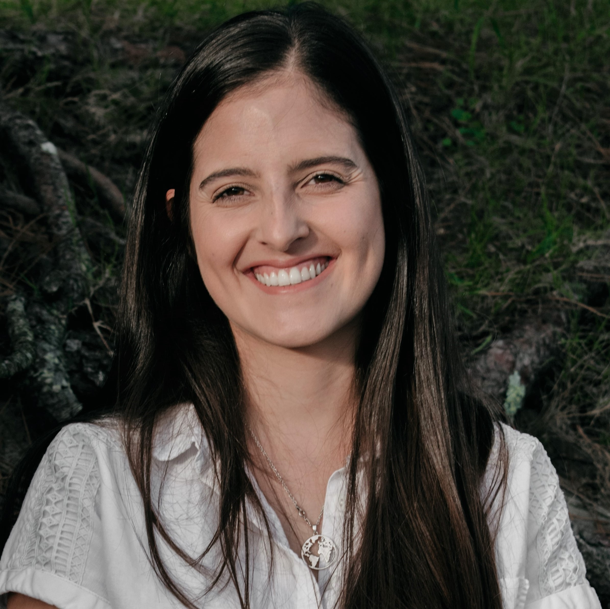

Curriculum Vitae
Datos Personales

Nombre: Noelia Camelia Acosta
Dirección: Ferrol, A Coruña, España
Contacto:
Resumen Profesional
Persona dinámica, proactiva y entusiasta. Versatil y capaz de realizar varias tareas de forma simultanea. Capacidad para trabajar en equipo o sola. Experiencia en laboratorios químicos, y conocimientos digitales. En búsqueda de una oportunidad laboral de modo de adquirir nuevas experiencias.
Educación
The complete Web development Bootcamp, Udemy | Octubre 2023 - A la fecha
Licenciatura en Química, Universidad de la República | Montevideo, Uruguay | Marzo 2007 - Setiembre 2019.
Formación complementaria
- ISO/IEC 17025:2017 Requisitos generales para la competencia de los laboratorios de ensayo y calibración. PTB Nationales Metrologiesinstitut (20h) 2021.
- Auditorías internas y acreditación de laboratorios. Instituto uruguayo de Normas técnicas (24h) 2020.
- Cálculo de incertidumbre. Instituto uruguayo de Normas técnicas (27h) 2020.
- Buenas Prácticas de fabricación y manufactura. CEFORTH (20h) 2020.
- Buenas Prácticas en el almacenamiento y distribución de especialidades farmacéuticas. CEFORTH (9h) 2020.
- Requisitos de la Norma UNIT-ISO/IEC 17025:2017. Organismo de acreditación uruguayo (20 h) 2017.
- Sistema de gestión de la calidad en los laboratorios de ensayo y calibración (UNIT-ISO/IEC 17025). Instituto uruguayo de Normas técnicas (24h) 2016.
- Validación y control de la calidad de métodos de análisis y ensayos. Instituto uruguayo de Normas técnicas (24h) 2014.
Experiencia Laboral
Encargada de laboratorio
H. Petersen | Montevideo, Uruguay | Agosto 2022 - Agosto 2023.
Analista de laboratorio
Laboratorio Microsules | Montevideo, Uruguay | Agosto 2021 - Julio 2022.
Técnico de laboratorio
UTE | Montevideo, Uruguay | Noviembre 2012 - Julio 2021.
Idiomas
- Castellano (nativo)
- Inglés (nivel medio)
- Italino (nivel básico)
Extras
- Libreta de conducir A y B (vigentes)
DISPONIBILIDAD DE INCORPORACIÓN INMEDIATA